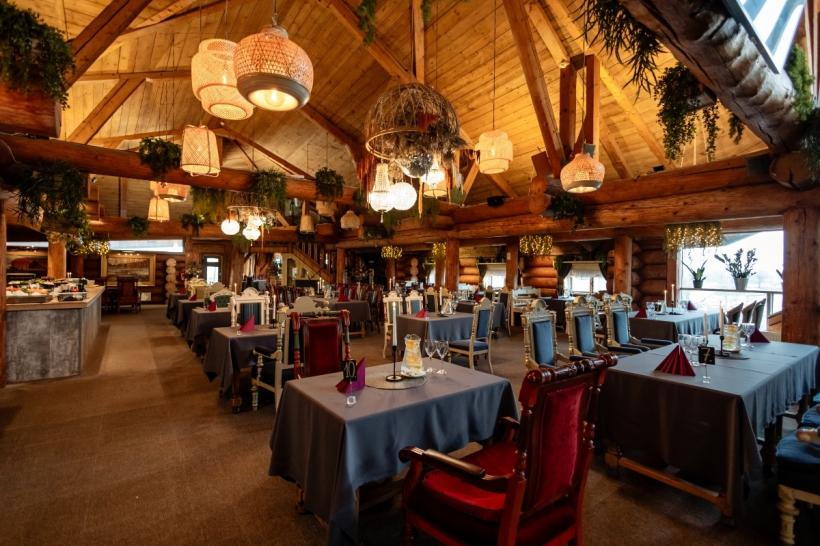

Mūsu ieteiktie restorāni


Oak A Burgers
Burgeri, Amerikāņu virtuve
Avotu iela 77, Rīga
📠+371 23990059 (Avotu iela)
Mazā Nometņu 34B, Rīga
📠+371 24403444 (Mazā Nometņu iela)
Skatīt vietni

LIDO Atpūtas Centrs
Latviešu, Austrumeiropas virtuve
Krasta iela 76, Rīga
📠+371 67700000
Skatīt vietniVegāniskā aukstā zupa
Gatavošanas laiks: 20 minūtes
Porcijas: 4
Sastāvdaļas:
- 6 vidēja lieluma kartupeļi
- 6 lielas, vārītas bietes
- 1 garš gurķis
- Buntīte redīsu
- 2 tējk. mārrutku
- Loki
- Dilles
- 1 l bezpiedevu sojas jogurta
- Ūdens
- Sāls, pipari
- 1 paciņa kūpināta tofu
Pagatavošana:
- Nomizo un sagriez kartupeļus, bietes, gurķi, redīsus un tofu nelielos gabaliņos.
- Sajauc dārzeņus ar sasmalcinātiem lokiem, dillēm un mārrutkiem.
- Pievieno sojas jogurtu un pēc vajadzības ūdeni, līdz iegūta vēlamā konsistence.
- Pievieno sāli un piparus, samaisa un pasniedz aukstu.


Restorāns Parks
Mūsdienīga Eiropas virtuve
Krišjāna Barona iela 3 - 1A, Jelgava
📠+371 20118881
Skatīt vietni


36. līnija Grill Restaurant
Grils, Jūras veltes
Baznīcas iela 2b, Jūrmala
📠+371 22010696
Skatīt vietni